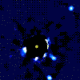
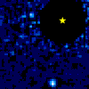

Коллекции:
Солнечная система
Звезды
Звездные скопления
Экзопланеты
Звездные остатки
Бурые карлики
Туманности
Галактики
Экзопланеты и родительские звезды
Имя,
радиус,
спектральный класс,
температура.
С анимированными картинками.

HR 8799
4
39.4 ± 1.0
1.5 ± 0.3
1.56
A5V
30±15
7430±75
5.96

51 Эридана
1
29.4 ± 0.3
1.45 ± 0.02
1.75 ± 0.05
F0IV
20±6
7331±30
5.22
Ссылки
Orbit Movies
NASA Exoplanet Archive
(4116 confirmed planets),
The Extrasolar Planets Encyclopaedia
(4177 planets / 3098 planetary systems / 679 multiple planet systems),
Exoplanet Orbit Database | Exoplanet Data Explorer
(3262 confirmed planets).
List of directly imaged exoplanets
List of extrasolar candidates for liquid water
,
Extraterrestrial liquid water
Жизнепригодность планеты